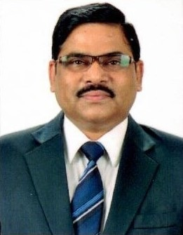
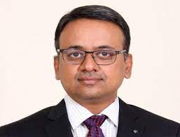

International Advisory Committee:
- Dr. Ke-Lin Du, Concordia University
- Dr. Kouichi Sakurai,Kyushu University
- Dr. James Flint Loughborough University, UK
- Dr. Francisco Falcone , Campus Arrosadia, UPNA,
- Dr.Johan Debayle, MINES Saint-Etienne, France.
- Dr. Karu Esselle, University of Technology Sydney.
- Dr. Gaetano Gargiulo, AU, Kingswood campus
- Dr. Ganesh Naik, Western Sydney University
- Dr. Ling Tok Wang, NUS
- Dr. Lakshman Tamil, University of Rhode Island
- Dr. Paolo Bifulco, Università degli Studi di Napoli Federico II Dip.Ing.
- Dr. Subramaniam Ganesan, Oakland University, USA
- Dr. Ramesh Agarwal, Washington University,
- Dr. Vincenzo Piuri, Professor, University of Milan, Italy
- Dr. Ashoka Bhat, Professor, University of Victoria, Canada,
- Dr. Upul Gunawardana, Western Sydney University
- Dr. Gerald Arada, DLSU Philippines.
- Dr. Raimi dewan, UTM Malaysia,
- Dr. Kumar Deveerasetty Kochi University of Technology, Japan,
- Dr. Gelli Ravikumar, Iowa State University, USA,
- Dr. Akbar Maleki, Shahrood University of Technology, Shahrood,
- Dr. S. Kim, Adama Science and Technology University, Adama
- Dr. K. Murari , University of North Carolina at Charlotte,
- Dr. Kaveri Mahapatra, Pacific Northwest National Laboratory, USA,
- Dr. Gerino Mappatao DLSU Philippines.
- Dr. Tushar Tyagi Bangor University, Bangor, UK,
- Dr. Javier Hernandez-Alvidrez, Sandia National Laboratories,
- Dr. Saurav Mallik, Harvard University
- Prof. Tomas Gotthans
- Dr. Vincenzo Piuri, Professor, University of Milan, Italy
- Dr. Leyre Azpilicueta, Tecnologico de Monterrey, CETEC, Monterrey,Mexico
- Dr. Pankaj Kumar Choudhury; Universiti Kebangsaan Malaysia.
- Dr. EUGENIA ZHUO , University of Santo Tomas,Phillippines
National Advisory Committee:(Conti….Update)
- Dr. Sanjeev Mishra, UDME, RTU, Kota
- Dr. Kailash N. Srivastava, VC, SUAS, Indore,
- Dr. Harpal Tiwari, Prof., EE, MNIT, Jaipur India
- Dr. K.R. Niazi, EE, MNIT, Jaipur India
- Dr. Sandeep Chaturvedi, Deputy General Manager at GAETEC
- Dr. V. K. Jain, former Director Grade Scientist, Solid State Physics Lab., DRDO, India
- Dr. Manoj Kumar Patairiya, Director, CSIR, NISCAIR, India
- Dr. K. Swarnasri, R.V.R. & J.C
- Dr. Ghali venkata subbarao, KL University
- Dr. Sudipta Chattopadhyay, Mizoram University
- Dr. Y S Kishore Babu, JNTUK, UCE Narasaraopet
- Dr. S. Jayaraj, NIT, Kozhikode, India
- Dr. Sriparna Saha, IIT Patna
- Dr. Nisha Gupta BITS Mishra.
- Dr. A.K.bhattacharjee, NIT Durgapur
- Dr. V.Ratnam, KL University
- Dr. Sibendu Samanta SRM University AP,
- Dr. A.Pal, TCS
- Dr. T.Kumar, IIT(ISM) Dhanbad
- Dr. D. Venkata Rao, VRSEC
- Dr. Gopi Ram, NIT Warangal
- Dr. T.Ranga Babu, R.V.R. & J.C
- Dr. Pallav Banerjee , IIT Kharagpur, India
- Dr. Ranjan Gangopadhyay, IIT Khragpur
- Dr. D. Rajeswara Rao,VRSEC
- Dr. K. Mazumdar, IIT(ISM) Dhanbad
- Dr. Anurag Singh ,IIIT Naya Raipur
- Dr. Apurba Chakraborty, BITS Pilani Goa
- Dr. Arijit Majumdar ,SAMEER, KOLKATA
- Dr. Ankan Bhattachya, MIT,WB
Honorary chair:
- Prof. (Dr.) Goutam Sutradhar, Director, NIT, Jamshedpur
- Dr. Y. Vijayalata, IEEE Chair, Hyderabad
- Dr. Mousmi A. Chaurasia, IEEE CoChair, Hyderabad
Conveners:
- Dr. Umakanta Nanda, VIT-AP University
- Dr. Ravindra Dhuli, VIT-AP University
Organizing General Chairs:
- Prof. Ljiljana Trajkovic FIEEE, Simon Fraser University
- Dr. Bappadittya Roy, VIT-AP University
Program Committee:
- Dr. Thalmann Daniel, Professor at EPFL, Director (MIRALab)
- Dr. Ling Tok Wang, NUS Singapore
- Dr. Ganesh Naik, Western Sydney University
- Dr. Tushar Tyagi, Bangor University, Bangor, United Kingdom
- Dr. Deepak Panda, Amrita University
- Dr. Jayandra Kumar, VIT-AP
- Dr. Lakhan Dev Sharma VIT-AP
- Dr. Usha Rani. Nelakuditi, , Vignan's Foundation
- Dr. Sai Kumar Tara, IEEE SAC Chair, Hyderabad
- Dr. Vincenzo Piuri, Professor, University of Milan, Italy
- Dr. Partha Pratim Kundu, Institute of Info comm Research, A*STAR
- Dr. Kouichi Sakurai, National University Corporation Kyushu University,
- Dr. Krishna Murari , University of North Carolina, Charlotte
- Dr. Sibendu Samanta SRM University AP,
- Dr. Upul Gunawardana, Western Sydney University
- Dr. Sudipta Chattopadhyay, Mizoram University
- Dr. Y S Kishore Babu, JNTUK, UCE Narasaraopet
- Dr. S. Jayaraj, NIT, Kozhikode, India
- Dr. D. Venkata Rao, VRSEC
- Dr. Gopi Ram, NIT Warangal
- Dr. T.Ranga Babu, R.V.R. & J.C
- Dr. Arijit Majumdar ,SAMEER, KOLKATA
- Dr. Ankan Bhattachya, MIT,WB
- Dr. Arjuna Muduli, KL University
- Dr. A.Dey, DTU Delhi
- Dr. K. Srinivasa Rao, KL University
Publicity & Media Committee:
- Dr. Vincenzo Piuri, Professor, University of Milan, Italy
- Dr. Ghali venkata subbarao, KL University
- Dr. Agam Das Goswami, VIT-AP
- Dr. A Bhattachya, HET,WB
- Dr. A.B Roy, SRM TN
- Dr. Wael Abd Ellatif Ali, AAST, Egypt
Finance Committee
- Dr. Anoop Kumar Mishra, VIT-AP
- Dr. Sumesh E P, VIT-AP
Registration Committee Chairs:
- Dr. Rajeev Sharma, VIT-AP
- Dr. Khairnar Vikas Vishnu, VIT-AP
- Dr. Parthasarathy R, NITT
Publications Committee:
- Dr. Shazia Hasan BITs-Pilani Dubai
- Dr. Y.V. Pavan Kumar, VIT-AP
- Dr. M.Sucharitha, VIT-AP
- Dr. D. Rajeswara Rao,VRSEC
- Dr. Telmo Rui C. C. Fernandes, IPLEIRIA, PT
- Dr. Gopi Ram, NITW
- Dr.Takuichi Hirano, Tokyo City University
Women Committee Chairs:
- Dr. Nаtaša Mаleš-Ilić, University of Niš, Serbia
- Dr. K. Swarnasri, R.V.R. & J.C
- Dr. Neha Gupta, VIT-AP
- Dr. S. Biswas, NIT H
- Dr. Swati Shukla, VIT-AP
Sponshorship Committee:
- Dr. S.Ghosh, HCL India
- Dr. Arpan Pal, TCS,India
- Mr.G.Anish Kumar, AADHYA Research
- Mr. P. Siddharath, Adani Power
- Dr. Subhashish Mahapatra, VIT-AP
- Dr. Suseela Vappangi, VIT-AP
International Relations Committee:
- Dr. Ujjal Chakraborty, NIT S
- Dr. Koushik Roy, UIU, Dhaka, Bangladesh
- Dr. Aakash Bansal, Loughborough University, UK
- Dr. Debajit Goswami, VIT-AP
- Dr. Sambhudutta Nanda, VIT-AP
- Dr. Arvind Kumar, VNIT Nagpur